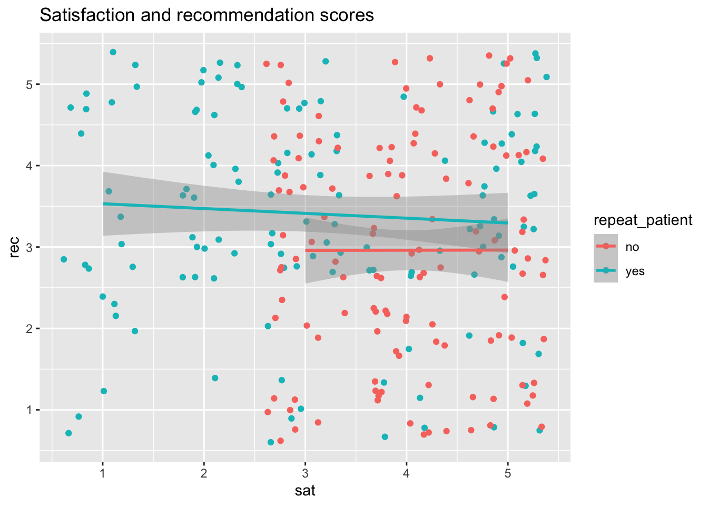

<!DOCTYPE html>
<html xmlns="http://www.w3.org/1999/xhtml" lang="en" xml:lang="en"><head>

<meta charset="utf-8">
<meta name="generator" content="quarto-1.2.475">

<meta name="viewport" content="width=device-width, initial-scale=1.0, user-scalable=yes">

<meta name="author" content="Alexus Lawrence">
<meta name="dcterms.date" content="2023-03-29">

<title>Alexus Quarto blog (Assignment 1) - Week 10 Post</title>
<style>
code{white-space: pre-wrap;}
span.smallcaps{font-variant: small-caps;}
div.columns{display: flex; gap: min(4vw, 1.5em);}
div.column{flex: auto; overflow-x: auto;}
div.hanging-indent{margin-left: 1.5em; text-indent: -1.5em;}
ul.task-list{list-style: none;}
ul.task-list li input[type="checkbox"] {
  width: 0.8em;
  margin: 0 0.8em 0.2em -1.6em;
  vertical-align: middle;
}
pre > code.sourceCode { white-space: pre; position: relative; }
pre > code.sourceCode > span { display: inline-block; line-height: 1.25; }
pre > code.sourceCode > span:empty { height: 1.2em; }
.sourceCode { overflow: visible; }
code.sourceCode > span { color: inherit; text-decoration: inherit; }
div.sourceCode { margin: 1em 0; }
pre.sourceCode { margin: 0; }
@media screen {
div.sourceCode { overflow: auto; }
}
@media print {
pre > code.sourceCode { white-space: pre-wrap; }
pre > code.sourceCode > span { text-indent: -5em; padding-left: 5em; }
}
pre.numberSource code
  { counter-reset: source-line 0; }
pre.numberSource code > span
  { position: relative; left: -4em; counter-increment: source-line; }
pre.numberSource code > span > a:first-child::before
  { content: counter(source-line);
    position: relative; left: -1em; text-align: right; vertical-align: baseline;
    border: none; display: inline-block;
    -webkit-touch-callout: none; -webkit-user-select: none;
    -khtml-user-select: none; -moz-user-select: none;
    -ms-user-select: none; user-select: none;
    padding: 0 4px; width: 4em;
    color: #aaaaaa;
  }
pre.numberSource { margin-left: 3em; border-left: 1px solid #aaaaaa;  padding-left: 4px; }
div.sourceCode
  {   }
@media screen {
pre > code.sourceCode > span > a:first-child::before { text-decoration: underline; }
}
code span.al { color: #ff0000; font-weight: bold; } /* Alert */
code span.an { color: #60a0b0; font-weight: bold; font-style: italic; } /* Annotation */
code span.at { color: #7d9029; } /* Attribute */
code span.bn { color: #40a070; } /* BaseN */
code span.bu { color: #008000; } /* BuiltIn */
code span.cf { color: #007020; font-weight: bold; } /* ControlFlow */
code span.ch { color: #4070a0; } /* Char */
code span.cn { color: #880000; } /* Constant */
code span.co { color: #60a0b0; font-style: italic; } /* Comment */
code span.cv { color: #60a0b0; font-weight: bold; font-style: italic; } /* CommentVar */
code span.do { color: #ba2121; font-style: italic; } /* Documentation */
code span.dt { color: #902000; } /* DataType */
code span.dv { color: #40a070; } /* DecVal */
code span.er { color: #ff0000; font-weight: bold; } /* Error */
code span.ex { } /* Extension */
code span.fl { color: #40a070; } /* Float */
code span.fu { color: #06287e; } /* Function */
code span.im { color: #008000; font-weight: bold; } /* Import */
code span.in { color: #60a0b0; font-weight: bold; font-style: italic; } /* Information */
code span.kw { color: #007020; font-weight: bold; } /* Keyword */
code span.op { color: #666666; } /* Operator */
code span.ot { color: #007020; } /* Other */
code span.pp { color: #bc7a00; } /* Preprocessor */
code span.sc { color: #4070a0; } /* SpecialChar */
code span.ss { color: #bb6688; } /* SpecialString */
code span.st { color: #4070a0; } /* String */
code span.va { color: #19177c; } /* Variable */
code span.vs { color: #4070a0; } /* VerbatimString */
code span.wa { color: #60a0b0; font-weight: bold; font-style: italic; } /* Warning */
</style>


<script src="../../site_libs/quarto-nav/quarto-nav.js"></script>
<script src="../../site_libs/quarto-nav/headroom.min.js"></script>
<script src="../../site_libs/clipboard/clipboard.min.js"></script>
<script src="../../site_libs/quarto-search/autocomplete.umd.js"></script>
<script src="../../site_libs/quarto-search/fuse.min.js"></script>
<script src="../../site_libs/quarto-search/quarto-search.js"></script>
<meta name="quarto:offset" content="../../">
<script src="../../site_libs/quarto-html/quarto.js"></script>
<script src="../../site_libs/quarto-html/popper.min.js"></script>
<script src="../../site_libs/quarto-html/tippy.umd.min.js"></script>
<script src="../../site_libs/quarto-html/anchor.min.js"></script>
<link href="../../site_libs/quarto-html/tippy.css" rel="stylesheet">
<link href="../../site_libs/quarto-html/quarto-syntax-highlighting.css" rel="stylesheet" id="quarto-text-highlighting-styles">
<script src="../../site_libs/bootstrap/bootstrap.min.js"></script>
<link href="../../site_libs/bootstrap/bootstrap-icons.css" rel="stylesheet">
<link href="../../site_libs/bootstrap/bootstrap.min.css" rel="stylesheet" id="quarto-bootstrap" data-mode="light">
<script id="quarto-search-options" type="application/json">{
  "location": "navbar",
  "copy-button": false,
  "collapse-after": 3,
  "panel-placement": "end",
  "type": "overlay",
  "limit": 20,
  "language": {
    "search-no-results-text": "No results",
    "search-matching-documents-text": "matching documents",
    "search-copy-link-title": "Copy link to search",
    "search-hide-matches-text": "Hide additional matches",
    "search-more-match-text": "more match in this document",
    "search-more-matches-text": "more matches in this document",
    "search-clear-button-title": "Clear",
    "search-detached-cancel-button-title": "Cancel",
    "search-submit-button-title": "Submit"
  }
}</script>


<link rel="stylesheet" href="../../styles.css">
</head>

<body class="nav-fixed fullcontent">

<div id="quarto-search-results"></div>
  <header id="quarto-header" class="headroom fixed-top">
    <nav class="navbar navbar-expand-lg navbar-dark ">
      <div class="navbar-container container-fluid">
      <div class="navbar-brand-container">
    <a class="navbar-brand" href="../../index.html">
    <span class="navbar-title">Alexus Quarto blog (Assignment 1)</span>
    </a>
  </div>
          <button class="navbar-toggler" type="button" data-bs-toggle="collapse" data-bs-target="#navbarCollapse" aria-controls="navbarCollapse" aria-expanded="false" aria-label="Toggle navigation" onclick="if (window.quartoToggleHeadroom) { window.quartoToggleHeadroom(); }">
  <span class="navbar-toggler-icon"></span>
</button>
          <div class="collapse navbar-collapse" id="navbarCollapse">
            <ul class="navbar-nav navbar-nav-scroll ms-auto">
  <li class="nav-item">
    <a class="nav-link" href="../../about.html">
 <span class="menu-text">About</span></a>
  </li>  
  <li class="nav-item compact">
    <a class="nav-link" href="https://github.com/"><i class="bi bi-github" role="img">
</i> 
 <span class="menu-text"></span></a>
  </li>  
  <li class="nav-item compact">
    <a class="nav-link" href="https://twitter.com"><i class="bi bi-twitter" role="img">
</i> 
 <span class="menu-text"></span></a>
  </li>  
</ul>
              <div id="quarto-search" class="" title="Search"></div>
          </div> <!-- /navcollapse -->
      </div> <!-- /container-fluid -->
    </nav>
</header>
<!-- content -->
<header id="title-block-header" class="quarto-title-block default page-columns page-full">
  <div class="quarto-title-banner page-columns page-full">
    <div class="quarto-title column-body">
      <h1 class="title">Week 10 Post</h1>
                                <div class="quarto-categories">
                <div class="quarto-category">news</div>
                <div class="quarto-category">code</div>
                <div class="quarto-category">analysis</div>
              </div>
                  </div>
  </div>
    
  
  <div class="quarto-title-meta">

      <div>
      <div class="quarto-title-meta-heading">Author</div>
      <div class="quarto-title-meta-contents">
               <p>Alexus Lawrence </p>
            </div>
    </div>
      
      <div>
      <div class="quarto-title-meta-heading">Published</div>
      <div class="quarto-title-meta-contents">
        <p class="date">March 29, 2023</p>
      </div>
    </div>
    
      
    </div>
    
  
  </header><div id="quarto-content" class="quarto-container page-columns page-rows-contents page-layout-article page-navbar">
<!-- sidebar -->
<!-- margin-sidebar -->
    
<!-- main -->
<main class="content quarto-banner-title-block" id="quarto-document-content">


<p>Hello, Welcome to my Week 10 Blog post!</p>
<p>In today’s post, we will be learning how to create tidy data. This is basically data that is “messy” and we need to “tidy it up”</p>
<p>Let’s go!</p>
<section id="set-up" class="level2">
<h2 class="anchored" data-anchor-id="set-up">Set-up</h2>
<p>Before starting the exercise, I need to load the packages needed for the exercise , in this case it will be tidyverse.</p>
<p>The instructions also ask that I download a copy of both csv files, wide-exercise-1.csv and wide_exercise-2.csv, then read in the files using read_csv , naming them wide 1/wide 2 respectively.</p>
<div class="cell">
<div class="sourceCode cell-code" id="cb1"><pre class="sourceCode r code-with-copy"><code class="sourceCode r"><span id="cb1-1"><a href="#cb1-1" aria-hidden="true" tabindex="-1"></a><span class="co">#Load the package </span></span>
<span id="cb1-2"><a href="#cb1-2" aria-hidden="true" tabindex="-1"></a><span class="fu">library</span>(tidyverse)</span></code><button title="Copy to Clipboard" class="code-copy-button"><i class="bi"></i></button></pre></div>
<div class="cell-output cell-output-stderr">
<pre><code>── Attaching core tidyverse packages ──────────────────────── tidyverse 2.0.0 ──
✔ dplyr     1.1.2     ✔ readr     2.1.4
✔ forcats   1.0.0     ✔ stringr   1.5.0
✔ ggplot2   3.4.1     ✔ tibble    3.2.0
✔ lubridate 1.9.2     ✔ tidyr     1.3.0
✔ purrr     1.0.1     
── Conflicts ────────────────────────────────────────── tidyverse_conflicts() ──
✖ dplyr::filter() masks stats::filter()
✖ dplyr::lag()    masks stats::lag()
ℹ Use the ]8;;http://conflicted.r-lib.org/conflicted package]8;; to force all conflicts to become errors</code></pre>
</div>
</div>
<div class="cell">
<div class="sourceCode cell-code" id="cb3"><pre class="sourceCode r code-with-copy"><code class="sourceCode r"><span id="cb3-1"><a href="#cb3-1" aria-hidden="true" tabindex="-1"></a><span class="co"># Set the csv files to their object names </span></span>
<span id="cb3-2"><a href="#cb3-2" aria-hidden="true" tabindex="-1"></a>wide1<span class="ot">&lt;-</span><span class="fu">read_csv</span>(<span class="st">"/Users/Alexus/Downloads/wide_exercise-1.csv"</span>)</span></code><button title="Copy to Clipboard" class="code-copy-button"><i class="bi"></i></button></pre></div>
<div class="cell-output cell-output-stderr">
<pre><code>Rows: 50 Columns: 7
── Column specification ────────────────────────────────────────────────────────
Delimiter: ","
chr (1): repeat
dbl (6): id, q1, q2, q3, q4, q5

ℹ Use `spec()` to retrieve the full column specification for this data.
ℹ Specify the column types or set `show_col_types = FALSE` to quiet this message.</code></pre>
</div>
<div class="sourceCode cell-code" id="cb5"><pre class="sourceCode r code-with-copy"><code class="sourceCode r"><span id="cb5-1"><a href="#cb5-1" aria-hidden="true" tabindex="-1"></a>wide2<span class="ot">&lt;-</span><span class="fu">read_csv</span>(<span class="st">"/Users/Alexus/Downloads/wide_exercise-2.csv"</span>)</span></code><button title="Copy to Clipboard" class="code-copy-button"><i class="bi"></i></button></pre></div>
<div class="cell-output cell-output-stderr">
<pre><code>Rows: 50 Columns: 12
── Column specification ────────────────────────────────────────────────────────
Delimiter: ","
chr  (1): repeat_patient
dbl (11): id, q1_sat, q2_sat, q3_sat, q4_sat, q5_sat, q1_rec, q2_rec, q3_rec...

ℹ Use `spec()` to retrieve the full column specification for this data.
ℹ Specify the column types or set `show_col_types = FALSE` to quiet this message.</code></pre>
</div>
</div>
</section>
<section id="survey-1" class="level2">
<h2 class="anchored" data-anchor-id="survey-1">Survey 1</h2>
<section id="information-for-survey-1" class="level3">
<h3 class="anchored" data-anchor-id="information-for-survey-1">Information for survey 1 :</h3>
<p>Wide 1 contains data from 50 patients and they were each asked 5 questions about experience at a health center. The results are reported through satisfaction score &amp; calculated by mean of the five responses. The survey also records if it is their first time or a repeat patient.</p>
</section>
<section id="questions" class="level3">
<h3 class="anchored" data-anchor-id="questions">Questions:</h3>
<p>1)How many variables should the long-form version of wide 1 have? 2)How many observations should the long form of wide 1 have ?</p>
</section>
<section id="answers" class="level3">
<h3 class="anchored" data-anchor-id="answers">Answers:</h3>
<ol type="1">
<li>There will be 4 variables, I say this because when I view the wide-1 file it includes the patient id (1), then they were asked a question (2), each patient had to respond (3) and then lastly the report of whether they have been first or repeated patient(4).</li>
</ol>
<p>2)There will be 250 observations available because there are 50 patients and they were each asked 5 questions.</p>
</section>
</section>
<section id="tidy-1" class="level2">
<h2 class="anchored" data-anchor-id="tidy-1">Tidy 1</h2>
<section id="tidy-1-directions-transform-wide1-to-long-form-using-pivot_longer-and-store-it-in-an-object-named-tidy-1." class="level3">
<h3 class="anchored" data-anchor-id="tidy-1-directions-transform-wide1-to-long-form-using-pivot_longer-and-store-it-in-an-object-named-tidy-1.">Tidy 1 directions: Transform wide1 to long-form using pivot_longer() and store it in an object named tidy 1.</h3>
<div class="cell">
<div class="sourceCode cell-code" id="cb7"><pre class="sourceCode r code-with-copy"><code class="sourceCode r"><span id="cb7-1"><a href="#cb7-1" aria-hidden="true" tabindex="-1"></a><span class="co"># I am going to use pivot_longer using the same format included in the text </span></span>
<span id="cb7-2"><a href="#cb7-2" aria-hidden="true" tabindex="-1"></a></span>
<span id="cb7-3"><a href="#cb7-3" aria-hidden="true" tabindex="-1"></a>tidy1<span class="ot">&lt;-</span><span class="fu">pivot_longer</span>(  <span class="co">#Assign to the object </span></span>
<span id="cb7-4"><a href="#cb7-4" aria-hidden="true" tabindex="-1"></a>  <span class="at">data =</span> wide1,       <span class="co">#Data equal the data set wide 1 </span></span>
<span id="cb7-5"><a href="#cb7-5" aria-hidden="true" tabindex="-1"></a>    <span class="at">cols =</span> q1<span class="sc">:</span>q5,      <span class="co"># The columns satisfaction rates </span></span>
<span id="cb7-6"><a href="#cb7-6" aria-hidden="true" tabindex="-1"></a>    <span class="at">names_to =</span> <span class="st">'question'</span>,</span>
<span id="cb7-7"><a href="#cb7-7" aria-hidden="true" tabindex="-1"></a>    <span class="at">values_to=</span>  <span class="st">'response'</span>)</span>
<span id="cb7-8"><a href="#cb7-8" aria-hidden="true" tabindex="-1"></a></span>
<span id="cb7-9"><a href="#cb7-9" aria-hidden="true" tabindex="-1"></a><span class="co">#This worked and the number of observations that I predicted was correct</span></span></code><button title="Copy to Clipboard" class="code-copy-button"><i class="bi"></i></button></pre></div>
</div>
</section>
</section>
<section id="survey-2" class="level2">
<h2 class="anchored" data-anchor-id="survey-2">Survey 2</h2>
<section id="information-for-survey-2" class="level3">
<h3 class="anchored" data-anchor-id="information-for-survey-2">Information for survey 2:</h3>
<p>Wide2 has data from 50 patients as well. There are only two measures included in the questionnaire. However, similar to wide 1 there are five questions that relate to satisfaction but there are five questions regarding if they recommend the medical practice to a friend. These measures are reported by calculating the overall mean for each of the items.</p>
</section>
</section>
<section id="tidy-2a" class="level2">
<h2 class="anchored" data-anchor-id="tidy-2a">Tidy 2a</h2>
<p>For the first option, we’re going to treat the “satisfaction” and “recommendation” measurements as two categories of the same variable. This will be a fully long-form data set with five variables id, repeat_patient, question (the question number), category (whether it’s sat or rec), and response (the numerical rating).</p>
<section id="question-2a" class="level3">
<h3 class="anchored" data-anchor-id="question-2a">Question 2a:</h3>
<p>How many observations should the fully long-form version of wide 2 have?</p>
<p>I believe there will be 500 observations for wide 2 data set because there are 5 variables and but for the category it mentions 2 options the satisfaction and recommendation , therefore there will be 2 of those options per each patient.</p>
<p>My math : 50 patients x 5 variables= 250 250 x 2 (the options)= 500 observations</p>
</section>
<section id="directions-for-2a" class="level3">
<h3 class="anchored" data-anchor-id="directions-for-2a">Directions for 2a:</h3>
<p>Transform wide2 to full long-form using pivot_longer() and store it in an object named tidy2a.</p>
<p>I am provided 2 hints :</p>
<p>1)data %&gt;% pivot_longer() %&gt;% separate() 2)into = c(“col1”, “col2”)</p>
<div class="cell">
<div class="sourceCode cell-code" id="cb8"><pre class="sourceCode r code-with-copy"><code class="sourceCode r"><span id="cb8-1"><a href="#cb8-1" aria-hidden="true" tabindex="-1"></a>tidy2a<span class="ot">&lt;-</span> wide2<span class="sc">%&gt;%</span></span>
<span id="cb8-2"><a href="#cb8-2" aria-hidden="true" tabindex="-1"></a><span class="fu">pivot_longer</span>(</span>
<span id="cb8-3"><a href="#cb8-3" aria-hidden="true" tabindex="-1"></a>      <span class="at">cols =</span> q1_sat<span class="sc">:</span>q5_rec, <span class="co">#These are the columns include in the wide 2 data set </span></span>
<span id="cb8-4"><a href="#cb8-4" aria-hidden="true" tabindex="-1"></a>    <span class="at">names_to =</span> <span class="st">'question'</span>,</span>
<span id="cb8-5"><a href="#cb8-5" aria-hidden="true" tabindex="-1"></a>    <span class="at">values_to=</span>  <span class="st">'response'</span>)<span class="sc">%&gt;%</span></span>
<span id="cb8-6"><a href="#cb8-6" aria-hidden="true" tabindex="-1"></a><span class="co"># In the section we have 2 different options and in the hint we have to seperate into two columns </span></span>
<span id="cb8-7"><a href="#cb8-7" aria-hidden="true" tabindex="-1"></a>  </span>
<span id="cb8-8"><a href="#cb8-8" aria-hidden="true" tabindex="-1"></a>  <span class="fu">separate</span>(<span class="at">col=</span><span class="st">'question'</span>, <span class="co">#Separate the question in the question and category (the category has 2 / satisfaction and recommendation )</span></span>
<span id="cb8-9"><a href="#cb8-9" aria-hidden="true" tabindex="-1"></a>           <span class="at">into=</span><span class="fu">c</span>(<span class="st">'question'</span>,<span class="st">'category'</span>))</span></code><button title="Copy to Clipboard" class="code-copy-button"><i class="bi"></i></button></pre></div>
</div>
</section>
</section>
<section id="tidy-2b" class="level2">
<h2 class="anchored" data-anchor-id="tidy-2b">Tidy 2b</h2>
<section id="tidy2b-information-the-second-option-is-to-treat-the-satisfaction-and-recommendation-scores-as-two-distinct-variables.-this-only-makes-sense-if-the-satisfaction-and-recommendation-scores-for-each-question-number-are-related-to-each-other-e.g.-q1-is-about-the-same-thing-for-both-questions-making-them-part-of-the-same-observation." class="level3">
<h3 class="anchored" data-anchor-id="tidy2b-information-the-second-option-is-to-treat-the-satisfaction-and-recommendation-scores-as-two-distinct-variables.-this-only-makes-sense-if-the-satisfaction-and-recommendation-scores-for-each-question-number-are-related-to-each-other-e.g.-q1-is-about-the-same-thing-for-both-questions-making-them-part-of-the-same-observation.">Tidy2b information: The second option is to treat the satisfaction and recommendation scores as two distinct variables. This only makes sense if the satisfaction and recommendation scores for each question number are related to each other (e.g., q1 is about the same thing for both questions), making them part of the same observation.</h3>
<p>This version should also have five variables, but it won’t be fully long-form, it’ll be a slight mix of the two that we’re going to call “semi-long”. The variables in the semi-long version will be id, repeat, question (the question number), sat (the response for the satisfaction question), and rec (the response for the recommendation question).</p>
</section>
<section id="question-for-tidy-2b" class="level3">
<h3 class="anchored" data-anchor-id="question-for-tidy-2b">Question for tidy 2b:</h3>
<p>How many observations should the semi-long version of wide 2 have?</p>
<p>I feel like it would be 250 because the text tells us that it would be 2 distinct variables and that the question number are related to each other. In the previous question for 2a I multiplied the 2 variables (because there were 2 options) but now that they are being treated distinctively it should be half of the previous observation 250. Also , the semi-long was also a hint because it is mixing the two.</p>
</section>
</section>
<section id="creating-tidy-2b" class="level2">
<h2 class="anchored" data-anchor-id="creating-tidy-2b">Creating Tidy 2b</h2>
<div class="cell">
<div class="sourceCode cell-code" id="cb9"><pre class="sourceCode r code-with-copy"><code class="sourceCode r"><span id="cb9-1"><a href="#cb9-1" aria-hidden="true" tabindex="-1"></a><span class="co"># I can use the code I used for 2a and edit it accordingly</span></span>
<span id="cb9-2"><a href="#cb9-2" aria-hidden="true" tabindex="-1"></a>tidy2b<span class="ot">&lt;-</span> wide2<span class="sc">%&gt;%</span></span>
<span id="cb9-3"><a href="#cb9-3" aria-hidden="true" tabindex="-1"></a><span class="fu">pivot_longer</span>(</span>
<span id="cb9-4"><a href="#cb9-4" aria-hidden="true" tabindex="-1"></a>      <span class="at">cols =</span> q1_sat<span class="sc">:</span>q5_rec, </span>
<span id="cb9-5"><a href="#cb9-5" aria-hidden="true" tabindex="-1"></a>    <span class="at">names_to =</span> <span class="st">'question'</span>,</span>
<span id="cb9-6"><a href="#cb9-6" aria-hidden="true" tabindex="-1"></a>    <span class="at">values_to=</span>  <span class="st">'response'</span>)<span class="sc">%&gt;%</span></span>
<span id="cb9-7"><a href="#cb9-7" aria-hidden="true" tabindex="-1"></a></span>
<span id="cb9-8"><a href="#cb9-8" aria-hidden="true" tabindex="-1"></a>  </span>
<span id="cb9-9"><a href="#cb9-9" aria-hidden="true" tabindex="-1"></a>  <span class="fu">separate</span>(<span class="at">col=</span><span class="st">'question'</span>, <span class="co">#Separate the question in the question and category (the category has 2 / satisfaction and recommendation )</span></span>
<span id="cb9-10"><a href="#cb9-10" aria-hidden="true" tabindex="-1"></a>           <span class="at">into=</span><span class="fu">c</span>(<span class="st">'question'</span>,<span class="st">'category'</span>)) <span class="sc">%&gt;%</span></span>
<span id="cb9-11"><a href="#cb9-11" aria-hidden="true" tabindex="-1"></a>  <span class="fu">pivot_wider</span>(<span class="at">names_from =</span> <span class="st">'category'</span>, <span class="co">#use pivot wider because it is semi-long &amp; provides the responses more visually based on the category </span></span>
<span id="cb9-12"><a href="#cb9-12" aria-hidden="true" tabindex="-1"></a>              <span class="at">values_from=</span> <span class="st">'response'</span>)</span></code><button title="Copy to Clipboard" class="code-copy-button"><i class="bi"></i></button></pre></div>
</div>
</section>
<section id="analysis-and-visualization" class="level2">
<h2 class="anchored" data-anchor-id="analysis-and-visualization">Analysis and Visualization</h2>
<section id="analysis-and-visualization-directions" class="level3">
<h3 class="anchored" data-anchor-id="analysis-and-visualization-directions">Analysis and Visualization directions:</h3>
<p>Using group_by() and summarise(), calculate the mean score for each participant for both satisfaction and recommendation. Do this for both versions of the dataset so that you can see how the structure of the dataset changes the approach you need to take.</p>
<div class="cell">
<div class="sourceCode cell-code" id="cb10"><pre class="sourceCode r code-with-copy"><code class="sourceCode r"><span id="cb10-1"><a href="#cb10-1" aria-hidden="true" tabindex="-1"></a><span class="co"># The first version of tidy 2 is tidy 2a so let's start with that </span></span>
<span id="cb10-2"><a href="#cb10-2" aria-hidden="true" tabindex="-1"></a></span>
<span id="cb10-3"><a href="#cb10-3" aria-hidden="true" tabindex="-1"></a>tidy2a<span class="sc">%&gt;%</span></span>
<span id="cb10-4"><a href="#cb10-4" aria-hidden="true" tabindex="-1"></a>  <span class="fu">group_by</span>(id,category)<span class="sc">%&gt;%</span> <span class="co"># I am going to group by category and id because I need each participants score and category represents the satisfaction or recommendation </span></span>
<span id="cb10-5"><a href="#cb10-5" aria-hidden="true" tabindex="-1"></a>  <span class="fu">summarise</span>(<span class="at">mean=</span><span class="fu">mean</span>(response),<span class="at">.groups =</span> <span class="st">'drop'</span>)</span></code><button title="Copy to Clipboard" class="code-copy-button"><i class="bi"></i></button></pre></div>
<div class="cell-output cell-output-stdout">
<pre><code># A tibble: 100 × 3
      id category  mean
   &lt;dbl&gt; &lt;chr&gt;    &lt;dbl&gt;
 1     1 rec        3.8
 2     1 sat        1.8
 3     2 rec        4  
 4     2 sat        2.6
 5     3 rec        4.8
 6     3 sat        2.6
 7     4 rec        4.4
 8     4 sat        2  
 9     5 rec        4  
10     5 sat        2.6
# ℹ 90 more rows</code></pre>
</div>
<div class="sourceCode cell-code" id="cb12"><pre class="sourceCode r code-with-copy"><code class="sourceCode r"><span id="cb12-1"><a href="#cb12-1" aria-hidden="true" tabindex="-1"></a>tidy2b<span class="sc">%&gt;%</span></span>
<span id="cb12-2"><a href="#cb12-2" aria-hidden="true" tabindex="-1"></a>  <span class="fu">group_by</span>(id)<span class="sc">%&gt;%</span></span>
<span id="cb12-3"><a href="#cb12-3" aria-hidden="true" tabindex="-1"></a>  <span class="fu">summarise</span>(<span class="at">mean_satisfaction=</span><span class="fu">mean</span>(sat),</span>
<span id="cb12-4"><a href="#cb12-4" aria-hidden="true" tabindex="-1"></a>            <span class="at">rec_mean=</span><span class="fu">mean</span>(rec))</span></code><button title="Copy to Clipboard" class="code-copy-button"><i class="bi"></i></button></pre></div>
<div class="cell-output cell-output-stdout">
<pre><code># A tibble: 50 × 3
      id mean_satisfaction rec_mean
   &lt;dbl&gt;             &lt;dbl&gt;    &lt;dbl&gt;
 1     1               1.8      3.8
 2     2               2.6      4  
 3     3               2.6      4.8
 4     4               2        4.4
 5     5               2.6      4  
 6     6               3        3.8
 7     7               2.4      4.6
 8     8               4        4  
 9     9               4        4.2
10    10               3.2      3.8
# ℹ 40 more rows</code></pre>
</div>
<div class="sourceCode cell-code" id="cb14"><pre class="sourceCode r code-with-copy"><code class="sourceCode r"><span id="cb14-1"><a href="#cb14-1" aria-hidden="true" tabindex="-1"></a><span class="co"># The text says two treat the variables as distinct but when i run my code the groups are still there , i'll compare my code to Professor Crump's to see where I am going wrong </span></span>
<span id="cb14-2"><a href="#cb14-2" aria-hidden="true" tabindex="-1"></a></span>
<span id="cb14-3"><a href="#cb14-3" aria-hidden="true" tabindex="-1"></a><span class="co"># I  couldn't find anything so I used the text and they used .groups=drop to separate the variables, so i'm going to do that and see if it works for me. </span></span></code><button title="Copy to Clipboard" class="code-copy-button"><i class="bi"></i></button></pre></div>
</div>
<p>Now this looks better because before the groups were still existent. Also the number of observations matched my expectation.</p>
</section>
</section>
<section id="plot-1" class="level2">
<h2 class="anchored" data-anchor-id="plot-1">Plot 1</h2>
<p>I am asked to reproduce this graph (below), which is demonstrating the relationship between satisfaction and recommendation scores, by whether the patient is a repeat patient.</p>
<p>I am provided with this hint: geom_jitter() which is for point position.</p>
<p>This should be easy because I have created scatter plots in the past.</p>
<p>knitr::include_graphics(“img/rmarkdown_hex. png”)</p>
<div class="cell">
<div class="sourceCode cell-code" id="cb15"><pre class="sourceCode r code-with-copy"><code class="sourceCode r"><span id="cb15-1"><a href="#cb15-1" aria-hidden="true" tabindex="-1"></a>knitr<span class="sc">::</span><span class="fu">include_graphics</span>(<span class="st">"/Users/Alexus/Desktop/Scatter (plot 1 ).png"</span>)</span></code><button title="Copy to Clipboard" class="code-copy-button"><i class="bi"></i></button></pre></div>
<div class="cell-output-display">
<p></p>
</div>
</div>
<p>Let’s go !</p>
<div class="cell">
<div class="sourceCode cell-code" id="cb16"><pre class="sourceCode r code-with-copy"><code class="sourceCode r"><span id="cb16-1"><a href="#cb16-1" aria-hidden="true" tabindex="-1"></a>tidy2b_scatter <span class="ot">&lt;-</span> <span class="fu">ggplot</span>(tidy2b, <span class="fu">aes</span>(<span class="at">x =</span> sat, <span class="at">y =</span> rec,</span>
<span id="cb16-2"><a href="#cb16-2" aria-hidden="true" tabindex="-1"></a>                   <span class="at">colour =</span> repeat_patient)) <span class="sc">+</span></span>
<span id="cb16-3"><a href="#cb16-3" aria-hidden="true" tabindex="-1"></a>  <span class="fu">geom_jitter</span>() <span class="sc">+</span></span>
<span id="cb16-4"><a href="#cb16-4" aria-hidden="true" tabindex="-1"></a>  <span class="co">#tidy 2b includes the satisfaction information and the repetition of the patient </span></span>
<span id="cb16-5"><a href="#cb16-5" aria-hidden="true" tabindex="-1"></a>       </span>
<span id="cb16-6"><a href="#cb16-6" aria-hidden="true" tabindex="-1"></a>  <span class="fu">geom_smooth</span>(<span class="at">method =</span> <span class="st">"lm"</span>) <span class="sc">+</span></span>
<span id="cb16-7"><a href="#cb16-7" aria-hidden="true" tabindex="-1"></a>  </span>
<span id="cb16-8"><a href="#cb16-8" aria-hidden="true" tabindex="-1"></a>  <span class="fu">ggtitle</span>(<span class="st">"Satisfaction and recommendation scores "</span>)</span>
<span id="cb16-9"><a href="#cb16-9" aria-hidden="true" tabindex="-1"></a><span class="co">#lm is the method because it is a y and x relationship </span></span>
<span id="cb16-10"><a href="#cb16-10" aria-hidden="true" tabindex="-1"></a></span>
<span id="cb16-11"><a href="#cb16-11" aria-hidden="true" tabindex="-1"></a></span>
<span id="cb16-12"><a href="#cb16-12" aria-hidden="true" tabindex="-1"></a>  tidy2b_scatter</span></code><button title="Copy to Clipboard" class="code-copy-button"><i class="bi"></i></button></pre></div>
<div class="cell-output cell-output-stderr">
<pre><code>`geom_smooth()` using formula = 'y ~ x'</code></pre>
</div>
<div class="cell-output-display">
<p></p>
</div>
</div>
</section>
<section id="plot-2" class="level2">
<h2 class="anchored" data-anchor-id="plot-2">Plot 2</h2>
<p>The next plot that I need to recreate is below.</p>
<p>This box plot represents showing satisfaction and recommendation separately</p>
<div class="cell">
<div class="sourceCode cell-code" id="cb18"><pre class="sourceCode r code-with-copy"><code class="sourceCode r"><span id="cb18-1"><a href="#cb18-1" aria-hidden="true" tabindex="-1"></a>knitr<span class="sc">::</span><span class="fu">include_graphics</span>(<span class="st">"/Users/Alexus/Desktop/box plot .png"</span>)</span></code><button title="Copy to Clipboard" class="code-copy-button"><i class="bi"></i></button></pre></div>
<div class="cell-output-display">
<p></p>
</div>
</div>
<div class="cell">
<div class="sourceCode cell-code" id="cb19"><pre class="sourceCode r code-with-copy"><code class="sourceCode r"><span id="cb19-1"><a href="#cb19-1" aria-hidden="true" tabindex="-1"></a>tidy2a_box<span class="ot">&lt;-</span><span class="fu">ggplot</span>(tidy2a, <span class="co">#using this data frame because it includes the information that I need </span></span>
<span id="cb19-2"><a href="#cb19-2" aria-hidden="true" tabindex="-1"></a>      <span class="fu">aes</span>(<span class="at">x =</span> repeat_patient, <span class="at">y =</span> response, <span class="at">fill =</span> repeat_patient)) <span class="sc">+</span></span>
<span id="cb19-3"><a href="#cb19-3" aria-hidden="true" tabindex="-1"></a>  <span class="fu">geom_boxplot</span>() <span class="sc">+</span></span>
<span id="cb19-4"><a href="#cb19-4" aria-hidden="true" tabindex="-1"></a>  <span class="fu">facet_wrap</span>(<span class="sc">~</span>category)<span class="sc">+</span></span>
<span id="cb19-5"><a href="#cb19-5" aria-hidden="true" tabindex="-1"></a><span class="fu">theme_bw</span>() <span class="sc">+</span></span>
<span id="cb19-6"><a href="#cb19-6" aria-hidden="true" tabindex="-1"></a>  <span class="co">#I googled how to fill in the color of a box plot and I found a function called scale_fill_brewer which gives you a specific shade of colors, included are a dark orange and dark green , so i am going to use dark2 but there are a variety of colors if you look it up. I wanted to learn how to fill it in manually or separately but I found that if you do it manually both boxes will be the same color. </span></span>
<span id="cb19-7"><a href="#cb19-7" aria-hidden="true" tabindex="-1"></a>  <span class="fu">scale_fill_brewer</span>(<span class="at">palette =</span> <span class="st">"Dark2"</span>)</span>
<span id="cb19-8"><a href="#cb19-8" aria-hidden="true" tabindex="-1"></a>  </span>
<span id="cb19-9"><a href="#cb19-9" aria-hidden="true" tabindex="-1"></a>tidy2a_box</span></code><button title="Copy to Clipboard" class="code-copy-button"><i class="bi"></i></button></pre></div>
<div class="cell-output-display">
<p></p>
</div>
</div>
</section>
<section id="plot-3" class="level2">
<h2 class="anchored" data-anchor-id="plot-3">Plot 3</h2>
<p>The last Plot will be demonstrating the response across all questions and categories</p>
<div class="cell">
<div class="sourceCode cell-code" id="cb20"><pre class="sourceCode r code-with-copy"><code class="sourceCode r"><span id="cb20-1"><a href="#cb20-1" aria-hidden="true" tabindex="-1"></a>knitr<span class="sc">::</span><span class="fu">include_graphics</span>(<span class="st">"/Users/Alexus/Desktop/histogram (plot 3 ) .png"</span>)</span></code><button title="Copy to Clipboard" class="code-copy-button"><i class="bi"></i></button></pre></div>
<div class="cell-output-display">
<p></p>
</div>
</div>
<div class="cell">
<div class="sourceCode cell-code" id="cb21"><pre class="sourceCode r code-with-copy"><code class="sourceCode r"><span id="cb21-1"><a href="#cb21-1" aria-hidden="true" tabindex="-1"></a>histo_tidy2<span class="ot">&lt;-</span> <span class="fu">ggplot</span>(tidy2a, </span>
<span id="cb21-2"><a href="#cb21-2" aria-hidden="true" tabindex="-1"></a>       <span class="fu">aes</span>(<span class="at">x =</span> response)) <span class="sc">+</span></span>
<span id="cb21-3"><a href="#cb21-3" aria-hidden="true" tabindex="-1"></a>  <span class="fu">geom_histogram</span>(<span class="at">fill =</span> <span class="st">'grey'</span>, <span class="at">binwidth =</span> <span class="dv">1</span>, <span class="at">colour=</span> <span class="st">"black"</span> ) <span class="sc">+</span></span>
<span id="cb21-4"><a href="#cb21-4" aria-hidden="true" tabindex="-1"></a>  <span class="fu">xlab</span>(<span class="st">"Responses across all question and categories"</span>) <span class="sc">+</span></span>
<span id="cb21-5"><a href="#cb21-5" aria-hidden="true" tabindex="-1"></a>  <span class="fu">theme_bw</span>()</span>
<span id="cb21-6"><a href="#cb21-6" aria-hidden="true" tabindex="-1"></a>histo_tidy2</span></code><button title="Copy to Clipboard" class="code-copy-button"><i class="bi"></i></button></pre></div>
<div class="cell-output-display">
<p></p>
</div>
<div class="sourceCode cell-code" id="cb22"><pre class="sourceCode r code-with-copy"><code class="sourceCode r"><span id="cb22-1"><a href="#cb22-1" aria-hidden="true" tabindex="-1"></a><span class="co"># I do not need a y value because its for all responses</span></span>
<span id="cb22-2"><a href="#cb22-2" aria-hidden="true" tabindex="-1"></a><span class="co"># I need the bars to be closer together so I should add binwidth as suggested by r </span></span>
<span id="cb22-3"><a href="#cb22-3" aria-hidden="true" tabindex="-1"></a><span class="co">#When I add the bin width the bars are closed together the lines are non existent , I'm going to add the colour as suggested </span></span></code><button title="Copy to Clipboard" class="code-copy-button"><i class="bi"></i></button></pre></div>
</div>
<p>That looks good , that is all for my week assignment 10 , see you in the next post!</p>


</section>

</main> <!-- /main -->
<script id="quarto-html-after-body" type="application/javascript">
window.document.addEventListener("DOMContentLoaded", function (event) {
  const toggleBodyColorMode = (bsSheetEl) => {
    const mode = bsSheetEl.getAttribute("data-mode");
    const bodyEl = window.document.querySelector("body");
    if (mode === "dark") {
      bodyEl.classList.add("quarto-dark");
      bodyEl.classList.remove("quarto-light");
    } else {
      bodyEl.classList.add("quarto-light");
      bodyEl.classList.remove("quarto-dark");
    }
  }
  const toggleBodyColorPrimary = () => {
    const bsSheetEl = window.document.querySelector("link#quarto-bootstrap");
    if (bsSheetEl) {
      toggleBodyColorMode(bsSheetEl);
    }
  }
  toggleBodyColorPrimary();  
  const icon = "";
  const anchorJS = new window.AnchorJS();
  anchorJS.options = {
    placement: 'right',
    icon: icon
  };
  anchorJS.add('.anchored');
  const clipboard = new window.ClipboardJS('.code-copy-button', {
    target: function(trigger) {
      return trigger.previousElementSibling;
    }
  });
  clipboard.on('success', function(e) {
    // button target
    const button = e.trigger;
    // don't keep focus
    button.blur();
    // flash "checked"
    button.classList.add('code-copy-button-checked');
    var currentTitle = button.getAttribute("title");
    button.setAttribute("title", "Copied!");
    let tooltip;
    if (window.bootstrap) {
      button.setAttribute("data-bs-toggle", "tooltip");
      button.setAttribute("data-bs-placement", "left");
      button.setAttribute("data-bs-title", "Copied!");
      tooltip = new bootstrap.Tooltip(button, 
        { trigger: "manual", 
          customClass: "code-copy-button-tooltip",
          offset: [0, -8]});
      tooltip.show();    
    }
    setTimeout(function() {
      if (tooltip) {
        tooltip.hide();
        button.removeAttribute("data-bs-title");
        button.removeAttribute("data-bs-toggle");
        button.removeAttribute("data-bs-placement");
      }
      button.setAttribute("title", currentTitle);
      button.classList.remove('code-copy-button-checked');
    }, 1000);
    // clear code selection
    e.clearSelection();
  });
  function tippyHover(el, contentFn) {
    const config = {
      allowHTML: true,
      content: contentFn,
      maxWidth: 500,
      delay: 100,
      arrow: false,
      appendTo: function(el) {
          return el.parentElement;
      },
      interactive: true,
      interactiveBorder: 10,
      theme: 'quarto',
      placement: 'bottom-start'
    };
    window.tippy(el, config); 
  }
  const noterefs = window.document.querySelectorAll('a[role="doc-noteref"]');
  for (var i=0; i<noterefs.length; i++) {
    const ref = noterefs[i];
    tippyHover(ref, function() {
      // use id or data attribute instead here
      let href = ref.getAttribute('data-footnote-href') || ref.getAttribute('href');
      try { href = new URL(href).hash; } catch {}
      const id = href.replace(/^#\/?/, "");
      const note = window.document.getElementById(id);
      return note.innerHTML;
    });
  }
  const findCites = (el) => {
    const parentEl = el.parentElement;
    if (parentEl) {
      const cites = parentEl.dataset.cites;
      if (cites) {
        return {
          el,
          cites: cites.split(' ')
        };
      } else {
        return findCites(el.parentElement)
      }
    } else {
      return undefined;
    }
  };
  var bibliorefs = window.document.querySelectorAll('a[role="doc-biblioref"]');
  for (var i=0; i<bibliorefs.length; i++) {
    const ref = bibliorefs[i];
    const citeInfo = findCites(ref);
    if (citeInfo) {
      tippyHover(citeInfo.el, function() {
        var popup = window.document.createElement('div');
        citeInfo.cites.forEach(function(cite) {
          var citeDiv = window.document.createElement('div');
          citeDiv.classList.add('hanging-indent');
          citeDiv.classList.add('csl-entry');
          var biblioDiv = window.document.getElementById('ref-' + cite);
          if (biblioDiv) {
            citeDiv.innerHTML = biblioDiv.innerHTML;
          }
          popup.appendChild(citeDiv);
        });
        return popup.innerHTML;
      });
    }
  }
});
</script>
</div> <!-- /content -->


</body></html>